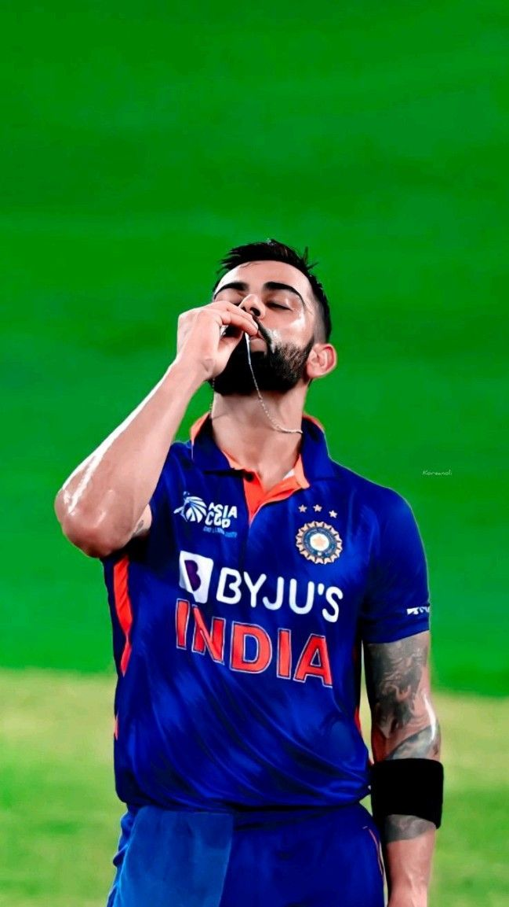
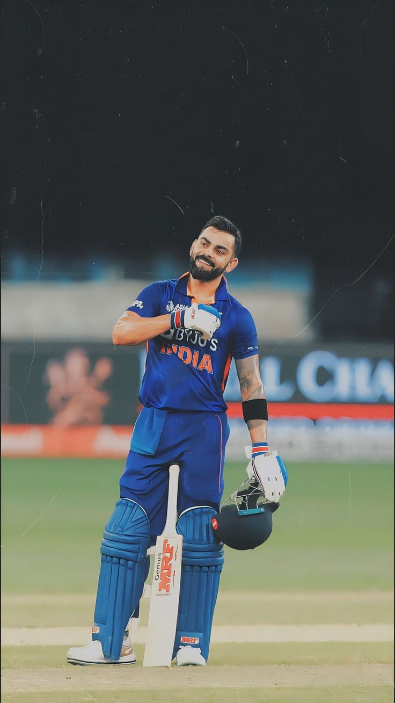
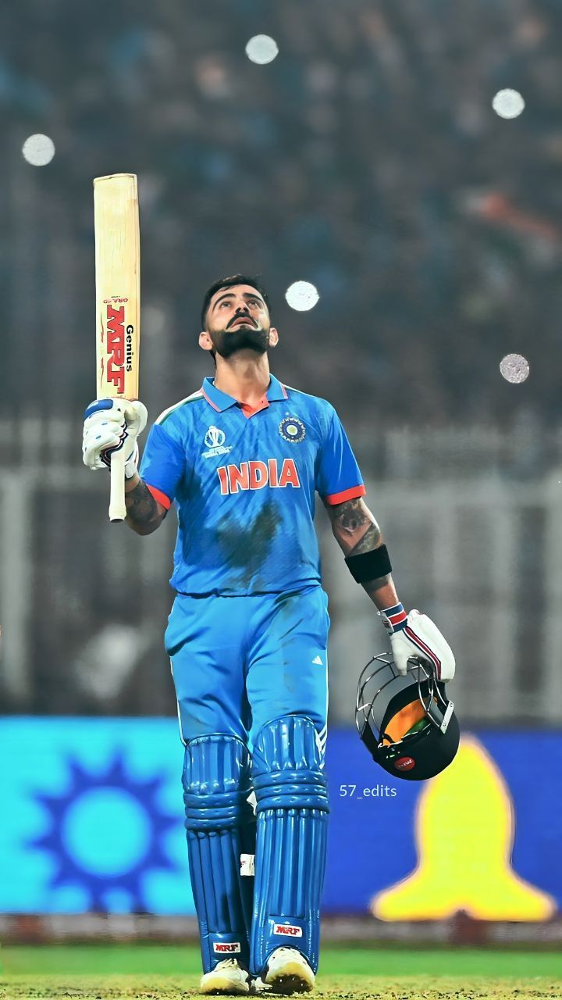

Virat Kohli is an Indian cricketer and former captain of the Indian national team. He is widely regarded as one of the greatest batsmen of all time.
Biography
Born on 5th November 1988, in Delhi, India, Virat Kohli started his career in cricket at a young age. He quickly rose through the ranks due to his exceptional talent and dedication. Kohli made his ODI debut in 2008 and has since become one of the leading cricketers in the world.
Achievements
- Fastest player to score 8,000, 9,000, 10,000, 11,000, and 12,000 runs in ODI cricket.
- Ranked as one of the world's most famous athletes by ESPN.
- Recipient of several prestigious awards including the ICC Cricketer of the Year and the Rajiv Gandhi Khel Ratna award.
Gallery


